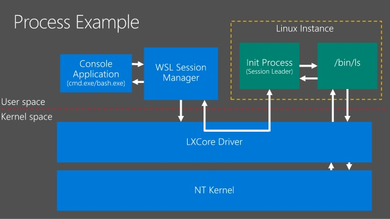

<h1>Windows Subsystem for Linux</h1>

<h2>Angol nyelvű bemutató</h2>

<iframe width="560" height="315" src="https://www.youtube.com/embed/av0UQy6g2FA" frameborder="0" allow="accelerometer; autoplay; encrypted-media; gyroscope; picture-in-picture" allowfullscreen></iframe>

<iframe width="560" height="315" src="https://www.youtube.com/embed/loC7VfgRT-I" frameborder="0" allow="accelerometer; autoplay; encrypted-media; gyroscope; picture-in-picture" allowfullscreen></iframe>

<h2>Elméleti alapok</h2>

<br/>
<br/>
<br/>

<a href="https://www.slideshare.net/WindowsDev/build-2017-b8113-using-the-windows-subsystem-for-linux-and-the-windows-console-for-a-next-generation-developmentexperience">forrás</a><br/>
<br/>
